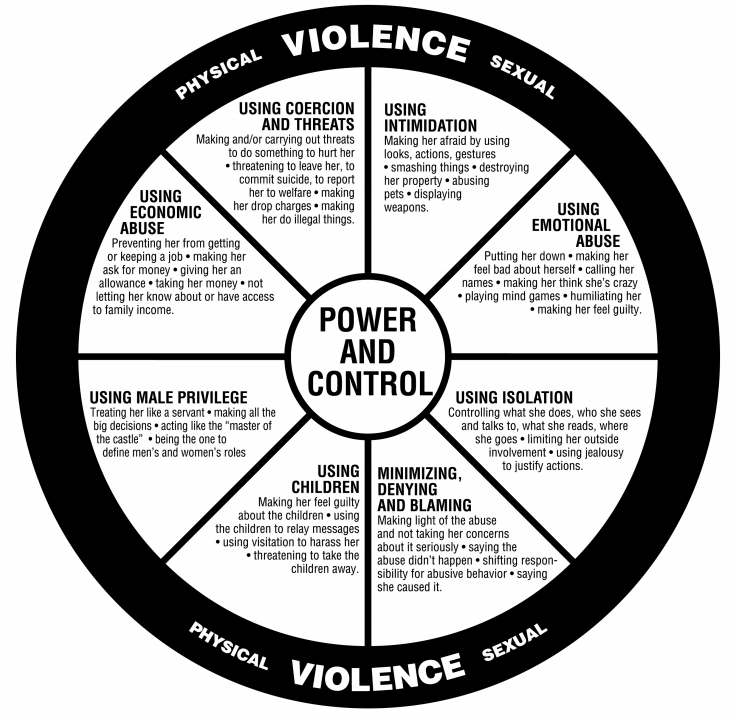

Victim-survivors are not responsible for the offender's decision to distribute or threaten to distribute images. Vulnerability often comes from trust, intimacy, coercion, and unequal power in relationships.
Who Is Most Vulnerable?
Female adolescents and young adults are frequently identified in research as common victim-survivors of nonconsensual image distribution.
Wolak and Finkelhor's (2016) sextortion survey respondents were mostly female, and many incidents began during the teenage years or early adulthood.
People in controlling or abusive relationships may be especially vulnerable when a partner or ex-partner uses images to threaten, punish, or control them.
Victims may also face added risk when exposure could lead to family judgment, school problems, job consequences, discrimination, or social humiliation.

The power and control wheel helps explain how abuse can involve coercion, threats, intimidation, isolation, emotional abuse, economic pressure, and the use of children.
Connection to Abusive Relationships
Nonconsensual image distribution can operate as a form of power and control.
An offender may threaten exposure to force reconciliation, prevent a breakup, punish independence, or keep the victim silent.
The abuse can connect to intimidation when the offender uses threats to create fear.
It can connect to emotional abuse when the offender humiliates, degrades, or blames the victim-survivor.
It can connect to isolation when the victim-survivor avoids friends, family, school, work, or social media because of fear of exposure.
What Places Victims in the Path of the Offender?
Sharing images in a trusted relationship.
Using dating apps, private messaging, or social media.
Trying to leave or challenge a controlling relationship.
Storing private images in accounts, cloud storage, or devices that can be accessed by someone else.
Why Victims May Stay Silent
Shame, embarrassment, or self-blame.
Fear that family, school, employers, or police will judge them.
Fear that reporting will cause the offender to release more images.
Belief that platforms or law enforcement will not be able to help.
References
Domestic Abuse Intervention Programs. (n.d.). Power and control wheel. https://www.theduluthmodel.org/wheels/
Shapiro, L. R. (2023). Online image-based sexual abusers. In Cyberpredators and their prey (pp. 295–334). CRC Press.
Wolak, J., & Finkelhor, D. (2016). Sextortion: Findings from a survey of 1,631 victims. Crimes against Children Research Center, University of New Hampshire.